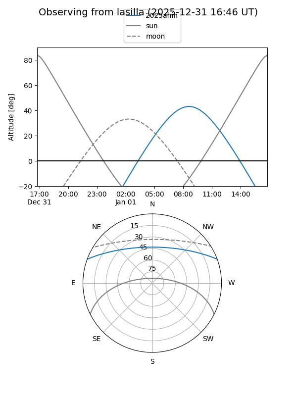
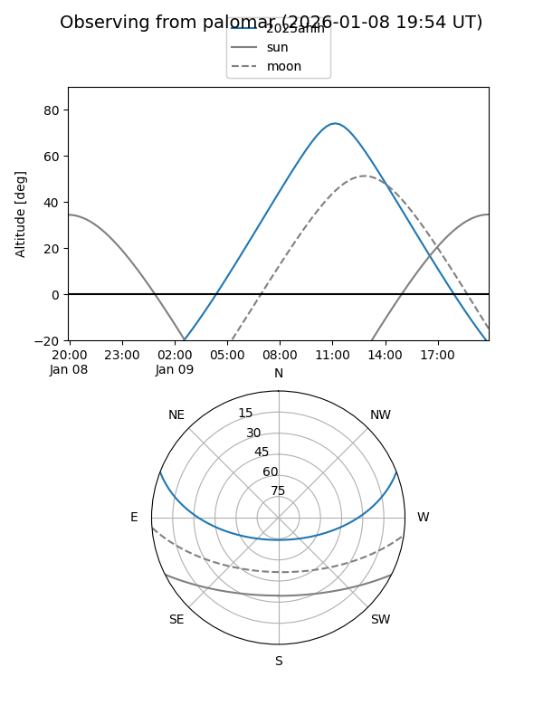

2025ahih
Target 2025ahih at 2025-12-31 17:00
Aliases and brokers:
FINK:
Lasair:
ALeRCE:
TNS:
YSE:
alt names
ZTF25aciohap (ztf,fink_ztf)
2025ahih (tns,yse)
Coordinates:
equatorial (ra, dec) = 158.9436,+17.65891
equatorial (HMS+DMS) = 10:35:46.46,+17:39:32.08
galactic (l, b) = (222.6017,+57.36086)
Flags:
Photometry:
last ztfr=20.05
1 ztfr detections
Lightcurve

Visibility


Additional plots